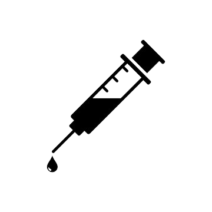
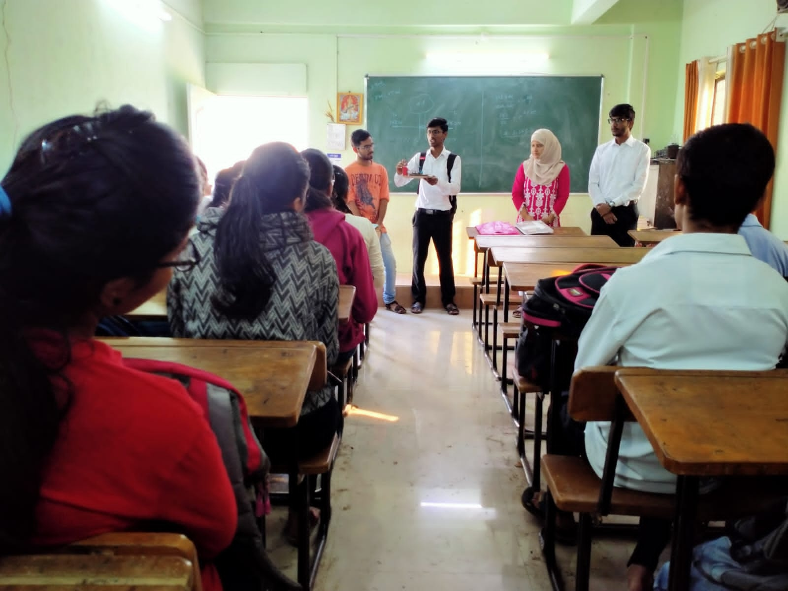
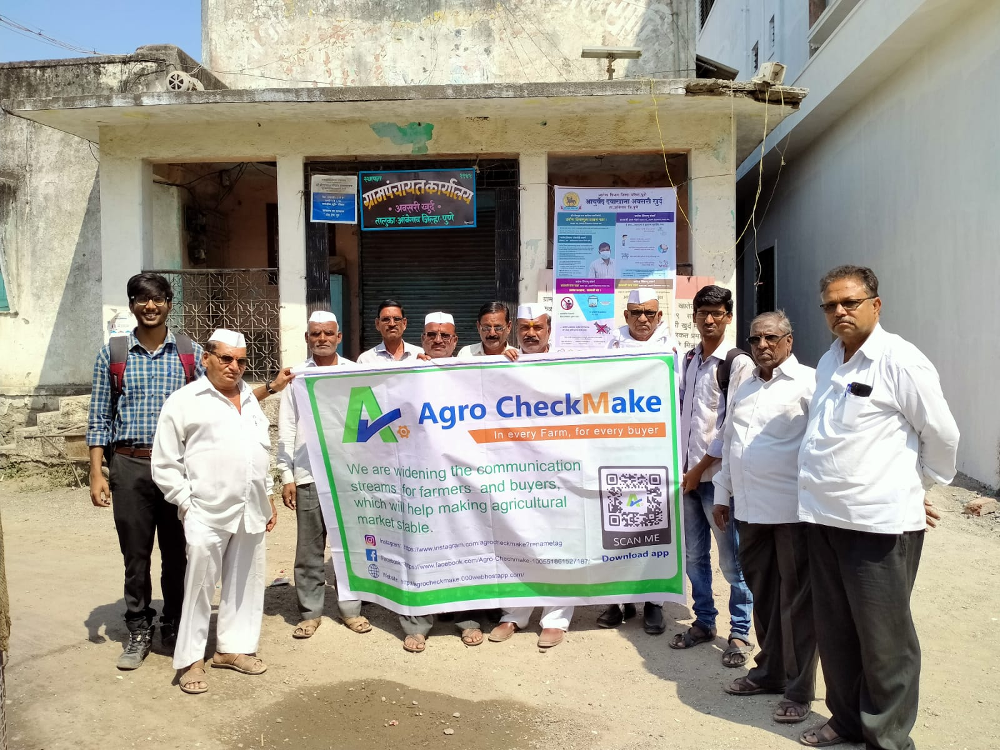
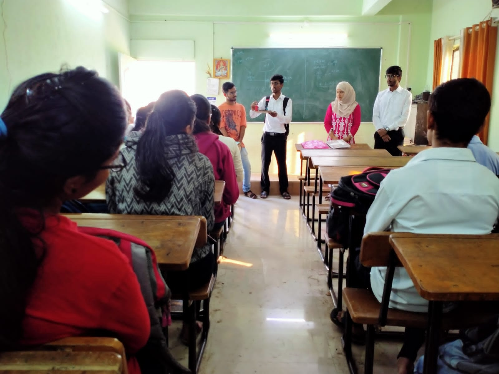
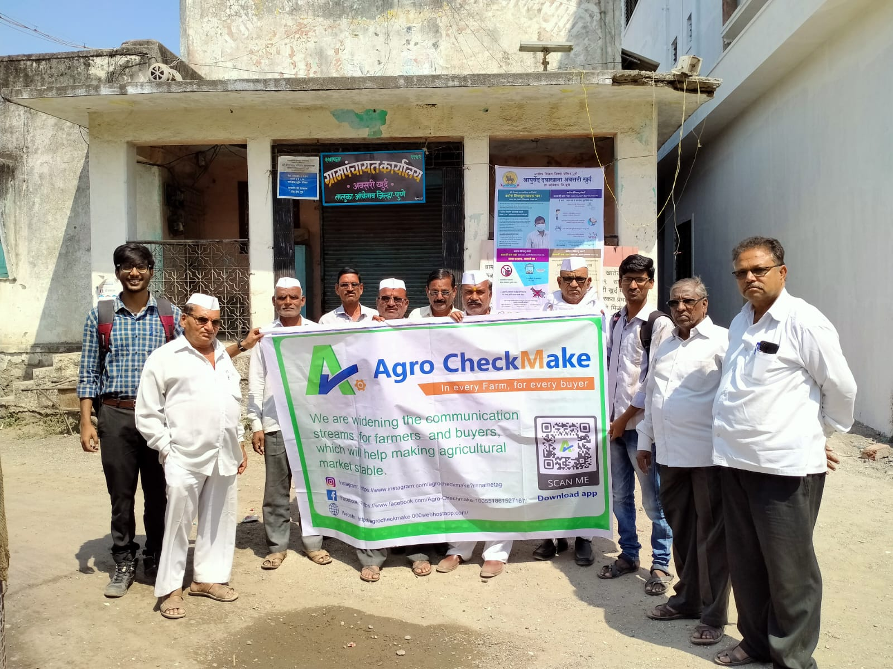

We've Secured
Noteworthy Achievements
tap to open book...
Reusable Medical Syringe
Reusable medical syringes are designed for multiple uses after proper cleaning and sterilization. They are commonly used in healthcare settings for various medical procedures.
next
Semifinalists of Eureka!
Business model competition conducted by IIT Bombay.participants often form teams to work on their business ideas collectively, bringing together diverse skills and expertise.
Soil testing and fertilizer Advisory system
A soil testing and fertilizer advisory system is a technology-driven approach used in agriculture to assess the nutrient composition and health of soil and provide recommendations for optimal fertilizer application. It aims to improve crop yields, enhance resource efficiency, and promote sustainable agricultural practices.
next
Branch change algorithm
Branch change algorithms are used in educational institutions, particularly colleges and universities, to facilitate the process of allowing students to switch from one academic branch or major to another. These algorithms aim to ensure a fair and transparent system for students to request and potentially be granted a change in their chosen academic discipline. .
We've Executed
Outstanding Projects
tap to open book...
next
Admission Reporting System
Admission Reporting System that has been used by the Admission Authorities of College.It is a software or digital platform designed to streamline and manage the admission process for incoming students. This system helps automate various aspects of the admission process, making it user-friendly for both students and administrative staff.
next
Portal for Branch Change
A portal for branch change is a digital platform or website provided by educational institutions that allows students to apply for changing their academic major or branch. This portal streamlines the process of requesting a change from one study program to another within the same institution.
next
Paper bottle
A paper bottle is a type of packaging designed to hold liquids, typically beverages, using paper-based materials. This innovative packaging solution aims to reduce plastic waste and environmental impact by providing a more sustainable alternative to traditional plastic bottles. Paper bottles combine the convenience of a traditional bottle with the eco-friendly properties.
next
Web portal for college
web portal for branch change involves designing and developing a digital platform that allows students to apply for changing their academic major or branch within an educational institution. .It is a software or digital platform designed to streamline and manage the admission process for incoming students.

Published Patent on
Reusable Medical Syringe
tap to open book...
Reusable Medical Syringe
Reusable medical syringes are designed for multiple uses after proper cleaning and sterilization. They are commonly used in healthcare settings for various medical procedures.
next
Key Features and Considerations: Material: Reusable syringes are often made from materials like stainless steel or high-quality plastics that can withstand autoclaving or other sterilization methods without compromising their structural integrity. Disassembly: Some reusable syringes can be disassembled into their individual components, such as the barrel, plunger, and gasket.
next
Sterilization: After use, reusable syringes need to be properly sterilized before being used again. Autoclaving is a common method of sterilization, but the specific method will depend on the syringe's material and design. Maintenance: Reusable syringes require careful maintenance to ensure proper functioning and prevent cross-contamination.
next
Labeling and Traceability: To maintain patient safety and regulatory compliance, it's important to properly label and track the usage of reusable syringes. Healthcare Setting: Reusable syringes are often found in healthcare settings where multiple procedures are conducted daily, such as hospitals, clinics, and laboratories..
 


